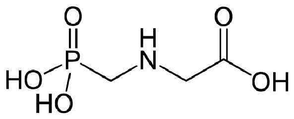
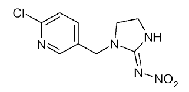

História / Origem
Como surgiu?
"Segundo o economista Julio Batista, sócio da GUERRABATISTA Advogados, o início do uso de agrotóxicos aconteceu após a Segunda Guerra Mundial (século XX), com o advento da grande transformação pela Revolução Verde. Visando o aumento da produtividade, vários países, incluindo o Brasil, adotaram produtos agroquímicos com o objetivo de conter pragas, insetos, ervas daninhas e demais doenças das culturas agrícolas que prejudicavam as plantações, principalmente as monoculturas."


Tipos
Controle de pragas
"Podem ser classificadas quanto ao tipo de praga que controlam, sua estrutura química ou o grau de dano que pode causar."
Quanto ao grupo químico, podemos classificá-las em orgânicos (contém carbono) e inorgânicos. Os orgânicos também podem se diferenciar por sintéticos e naturais.
- Herbicidas → controlam plantas
- Inseticidas → controlam insetos
- Fungicidas → controlam fungos
- Bactericidas → controlam bactérias
- Acaricidas → controlam ácaros
- Rodenticidas → controlam roedores
Tipos de Controle de Pragas:
Classificação Toxicológica
Índice de perigo
[...] o novo critério leva em conta apenas estudos de intoxicação aguda, desconsiderando outros sintomas comuns que não levam à morte. Além disto, apresenta valores de corte para classificação das várias categorias, diferentes dos critérios anteriores. A resolução prevê no seu Art. 39. que a “a classificação em função da toxicidade aguda dos agrotóxicos, afins e preservativos de madeira deve ser determinada e identificada com os respectivos nomes das categorias e cores nas faixas do rótulo dos produtos, de acordo com o estabelecido abaixo”:
- I – Categoria 1: Produto Extremamente Tóxico – faixa vermelha;
- II – Categoria 2: Produto Altamente Tóxico – faixa vermelha;
- III – Categoria 3: Produto Moderadamente Tóxico – faixa amarela;
- IV – Categoria 4: Produto Pouco Tóxico – faixa azul;
- V – Categoria 5: Produto Improvável de Causar Dano Agudo – faixa azul;
- VI- Não Classificado – Produto Não Classificado – faixa verde.
Categorias:

Tabela
Agrotóxicos
| Nome | Estrutura química | Funções orgânicas presentes | Tipo | Classificação Toxicológica | Aplicações / Curiosidades |
|---|---|---|---|---|---|
| Glifosato |  | Ácido carboxílico, amina | Herbicidas | IV - Pouco tóxico | Cultivo de grãos, algodão, cana de açúcar, cereais, frutas, pastagens, fumos, eucaliptos e seringueiras. Pode controlar mais de 150 espécies de plantas daninhas e é o agrotóxico mais utilizado no Brasil, UE e nos EUA. |
| 2,4-D | Éter, ácido carboxílico, haleto de arila | Herbicidas | I - Extremamente tóxico | Cultura de soja, milho, cana-de-açúcar, café, trigo, aveia, centeio e pastagem formada. Na cultura de soja é utilizado para matar as ervas daninhas. | |
| Mancozebe |  |
Amina, tioéster, ácido carbâmico | Fungicidas e acaricida | III - Moderadamente tóxico | O produto é um fungicida protetor do grupo químico dos ditiocarbamatos, possui ação multissítio no alvo, controlando inúmeras doenças fungicas que causam danos econômicos em várias culturas. É ideal para a rotação de fungicidas com produtos sistêmicos no MID (Manejo de Integrado de Doenças). |
| Acefato | Éter, Haleto de arila, ácido fosfórico | Inseticidas | IV - Pouco Tóxico | MIDACLOPRID NORTOX é um inseticida Neonicotinóide que age por ação sistêmica nas culturas do algodão, arroz, arroz irrigado, batata, cana-de-açúcar, citros, feijão, fumo, milho, soja, tomate e trigo, apresentando controle para os alvos biológicos abaixo indicados, os quais causam consideráveis danos à produção destas culturas. | |
| Imidacloprido |  | Amina, haleto de arila | Inseticidas | II - Altamente tóxico | O produto é um fungicida protetor do grupo químico dos ditiocarbamatos, possui ação multissítio no alvo, controlando inúmeras doenças fungicas que causam danos econômicos em várias culturas. É ideal para a rotação de fungicidas com produtos sistêmicos no MID (Manejo de Integrado de Doenças). |